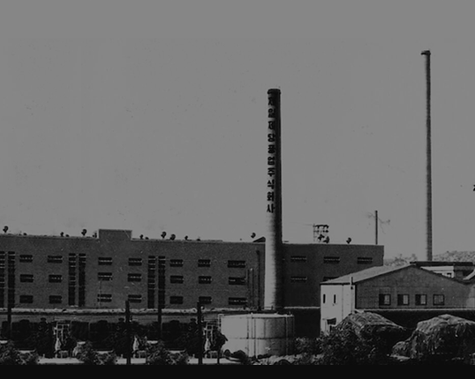
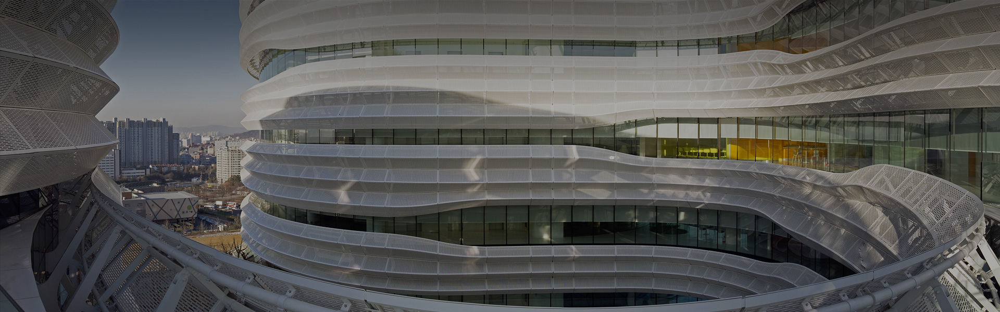

CJCJEILJEDANG
끊임없는 도전과 혁신을 통해 글로벌 식품·BIO 기업으로 도약하고 있습니다.

Global
국내 1위를 넘어 글로벌 사업을 중심으로 World Best 식품 & BIO 기업으로 나아가고 있습니다.

Blossompark
식품, BIO 핵심 연구소를 한곳에 모아 강력한 시너지를 창출합니다 열린 소통을 통해 새로움을 창조하는 글로벌 컴퍼니로의 성장, 그 시작점에 CJ블로썸파크가 있습니다.
Blossom-campus
통합연구소인 CJ블로썸파크의 R&D성과를 혁신적인 제품으로 실현하는 스마트 팩토리로 햇반, 비비고 등 전 세계 사람들에게 사랑 받는 가정간편식 제품을 만들고 있습니다. K-Food를 리딩하는 제품들은 CJ블로썸파크에서 탄생하여 CJ블로썸캠퍼스에서 성장합니다.

Nature to Nature
CJ제일제당은 지속가능한 미래를 위해 자연에서 소비자 식탁으로, 그리고 다시 자연으로 되돌리는 선 순환 체계를 구축합니다.
Carbon Neutral&Zero Waste
지구온난화, 이상기후, 환경오염은 직면한 위험과 현실이 되었습니다. 이제 기후변화 대응은 정부, 산업, 개인 구분 없이 공동의 협력을 통해 극복해야 할 사회적 과제입니다.
Supply
현대 비즈니스 환경에서 공급망의 지속가능성 확보는 기업의 성공과 경쟁력을 좌우하는 중요한 요소로 자리잡고 있습니다.
Governance
CJ제일제당은 투명한 지배구조 확립을 통해 효율성과 시너지를 높입니다

CJ제일제당은 지속가능한 미래를 위해
자연에서 소비자 식탁으로,
그리고 다시 자연으로 되돌리는
‘Nature to Nature’ 선순환 체계를 구축합니다.
2024년
CJ제일제당 지속가능경영 보고서
PDF 다운로드
보도자료2026.02.27
CJ제일제당 ‘퀴진케이’, “영셰프 전문성 강화해 글로벌 공략”…
MORE
보도자료2026.02.27
CJ제일제당 ‘퀴진케이’, “영셰프 전문성 강화해 글로벌 공략”…
기획칼럼2025.12.12
햇반 용기, ‘쓰레기’에서 ‘자원’으로 돌아오다
MORE
기획칼럼2025.12.12
햇반 용기, ‘쓰레기’에서 ‘자원’으로 돌아오다
언론보도2025.11.27
CJ제일제당의 ‘녹색 혁신’… 스스로 녹는 PHA 잔디, 유럽서 주목
MORE
언론보도2025.11.27
CJ제일제당의 ‘녹색 혁신’… 스스로 녹는 PHA 잔디, 유럽서 주목
언론보도2025.11.24
CJ제일제당, 전통주 들고 세계 무대 간다…K리커로 글로벌 공략[New & Good]
MORE
언론보도2025.11.24
CJ제일제당, 전통주 들고 세계 무대 간다…K리커로 글로벌 공략[New & Good]
보도자료2025.11.19
CJ제일제당, 자원순환사회연대·CJ푸드빌과 함께 ‘빨대 없는 스토어 만들기(Be Straw Free)’ 캠…
MORE
보도자료2025.11.19
CJ제일제당, 자원순환사회연대·CJ푸드빌과 함께 ‘빨대 없는 스토어 만들기(Be Straw Free)’ 캠…
보도자료2025.11.12
CJ제일제당, 결식아동에 스타 셰프·영양사가 만든 따뜻한 한 끼 도시락 지원
MORE
보도자료2025.11.12
CJ제일제당, 결식아동에 스타 셰프·영양사가 만든 따뜻한 한 끼 도시락 지원
보도자료2025.11.09
CJ제일제당 ‘퀴진케이’, tvN ‘폭군의 셰프’ 스페셜 팝업 성료… “드라마 속 궁중요리 맛보기 위한…
MORE
보도자료2025.11.09
CJ제일제당 ‘퀴진케이’, tvN ‘폭군의 셰프’ 스페셜 팝업 성료… “드라마 속 궁중요리 맛보기 위한…
언론보도2025.11.03
CJ제일제당, 바이오소재 글로벌 ‘잰걸음’
MORE
언론보도2025.11.03
CJ제일제당, 바이오소재 글로벌 ‘잰걸음’
보도자료2025.10.27
CJ제일제당 ‘퀴진케이’, tvN 드라마 ‘폭군의 셰프’ 체험형 팝업… “K-푸드와 K-콘텐츠의 특별한…
MORE
보도자료2025.10.27
CJ제일제당 ‘퀴진케이’, tvN 드라마 ‘폭군의 셰프’ 체험형 팝업… “K-푸드와 K-콘텐츠의 특별한…
보도자료2025.10.20
CJ제일제당 ‘크레잇’, ‘국순당’과 함께한 MZ세대 타깃 팝업행사 성료
MORE
보도자료2025.10.20
CJ제일제당 ‘크레잇’, ‘국순당’과 함께한 MZ세대 타깃 팝업행사 성료